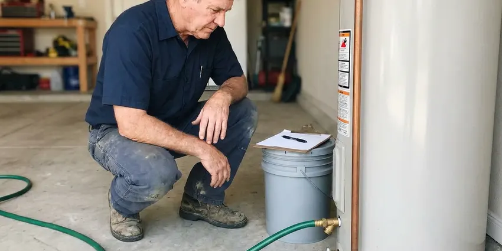
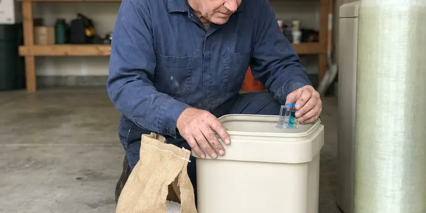
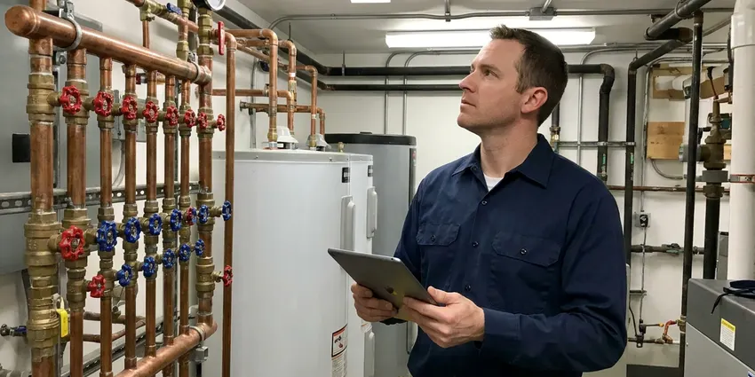
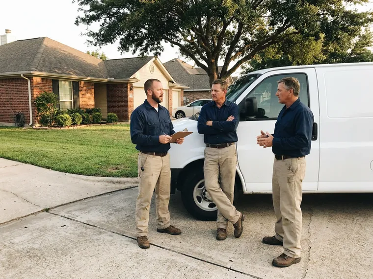

Slab Leak Detection in Galveston, TX
A hidden slab leak can damage your home's foundation in Galveston, TX. We use advanced technology to pinpoint leaks without unnecessary disruption.
- Fast Leak Detection
- Advanced Diagnostics
- Foundation Protection
- Expert Plumbers
Need Slab Leak Detection in Galveston, TX?
Our team is ready to diagnose and fix your slab leak efficiently.
Your Experts for Slab Leak Detection in Galveston, TX
DFJ Plumbing specializes in precise slab leak detection for homes across Galveston, TX. A slab leak, often hidden beneath your concrete foundation, can cause significant damage if not addressed quickly.
Our expertise includes:
- Electronic leak detection for accurate pinpointing
- Thermal imaging to identify subtle temperature changes
- Video inspection for pipe integrity assessment

Additional Plumbing Maintenance Services in Galveston, TX
Our maintenance and specialty plumbing services in Galveston, TX catch small problems before they become emergencies.


Professional water heater maintenance, Galveston

Water Softener Maintenance in Galveston

Galveston commercial plumbing specialists

Customers
Why Choose DFJ Plumbing for Slab Leak Detection in Galveston, TX?
Ignoring a slab leak can lead to costly foundation repairs and increased water bills. We provide thorough detection to prevent further damage to your home.
- Latest Tech, We invest in state-of-the-art leak detection equipment, including acoustic sensors and ground penetrating radar, for superior accuracy.
- Local Expertise, Understanding Texas's unique climate and common foundation types helps us diagnose issues faster and more effectively.
- Foundation Focus, Our methods are designed to protect your home's structural integrity, a critical concern for Texas homeowners.
Citywide Coverage
DFJ Plumbing proudly serves every neighborhood in Galveston, ensuring that no matter where you are, expert slab leak detection is just a call away. We understand the specific plumbing layouts common in different parts of Galveston.
Experienced Team
The DFJ Plumbing team undergoes continuous training in advanced leak detection techniques. We bring years of practical knowledge to every job, ensuring an accurate diagnosis for your slab leak.
Safety-First Approach
Safety is paramount for every slab leak detection project. We adhere strictly to all local Galveston, TX plumbing codes and safety regulations to protect your home and our technicians.
Trusted Certified Galveston Plumbing Services Professionals
At DFJ Plumbing, we take pride in providing licensed, certified plumbing services throughout Galveston, TX. Backed by recognized industry credentials, our experienced plumbers combine technical skill with genuine customer care. Whether it is repair, installation, or maintenance, we follow strict safety and quality standards to deliver long-lasting results you can trust.
Call Us Now PHCC Plumbing Contractor Recognition
PHCC Plumbing Contractor Recognition Better Business Bureau (BBB) Accreditation
Better Business Bureau (BBB) Accreditation Angi Certified Pro
Angi Certified Pro ISO 9001 Quality Management Certification
ISO 9001 Quality Management CertificationPrecise Slab Leak Detection Services in Galveston, TX
Electronic Acoustic Leak Detection in Galveston
Our team uses advanced electronic listening devices to pinpoint the exact location of a slab leak. These highly sensitive microphones can detect the faint sound of water escaping from a pressurized pipe under your foundation. This non-invasive method helps us avoid unnecessary concrete breaking, saving you time and money on repairs. It's especially effective for copper and PEX lines commonly found in Galveston homes.

Thermal Imaging for Slab Leaks in Galveston, TX
Thermal imaging cameras allow us to visualize temperature differences on surfaces, which can indicate a hidden water leak. As water escapes a hot water line, it creates a distinct thermal signature on the concrete slab. This technique is particularly useful for hot water line leaks and helps us narrow down the search area significantly without any physical disruption to your property in Galveston.
Pressure Testing & Isolation in Galveston
When a leak is suspected, we can perform pressure tests on individual water lines. By isolating sections of your plumbing system and monitoring pressure gauges, we can confirm the presence of a leak and often determine which specific line is compromised. This systematic approach is crucial for homes with complex plumbing layouts, ensuring an accurate diagnosis before any excavation in Galveston, TX.
Video Pipe Inspection for Sewer Leaks in Galveston, TX
While less common for slab leaks, sewer line issues under a slab can also mimic slab leak symptoms. We use high-resolution video cameras to inspect the interior of your drain lines, identifying cracks, blockages, or separations. This is vital if the issue isn't a pressurized water line, helping us determine if a sewer line repair is needed instead for your Galveston home.
Residential Slab Leak Detection in Galveston
We provide comprehensive slab leak detection services specifically tailored for residential properties throughout Galveston. From single-family homes to townhouses, we understand the common plumbing systems and foundation types prevalent in the area. Our goal is to quickly find the leak, provide a clear explanation, and offer effective repair solutions to protect your home and peace of mind.
Commercial Slab Leak Detection in Galveston, TX
Commercial properties in Galveston, TX also face the risk of slab leaks, which can disrupt business operations and lead to significant structural damage. DFJ Plumbing offers specialized detection services for businesses, using the same advanced technology to minimize downtime. We work efficiently to locate leaks in offices, retail spaces, and other commercial buildings.
Emergency Slab Leak Detection in Galveston
A sudden drop in water pressure, visible dampness, or the sound of running water can indicate an emergency slab leak. DFJ Plumbing offers emergency detection services in Galveston to address urgent situations quickly. We prioritize rapid response to mitigate water damage and prevent further structural compromise to your property.

Leak Detection for Older Texas Homes in Galveston, TX
Many older homes in Galveston, TX have copper or galvanized steel pipes that are more susceptible to corrosion and leaks over time. Our technicians are highly experienced in detecting leaks in these older systems, understanding their common failure points. We provide expert analysis for the unique challenges presented by vintage plumbing under concrete slabs.
Slab Leak Detection Near Me in Galveston, TX
When you search for 'slab leak detection near me' in Galveston, TX, DFJ Plumbing is your trusted local expert. Our rapid response team is always ready to deploy to your location, equipped with the best tools to find and diagnose any hidden leaks. We pride ourselves on being a reliable service provider for the entire Galveston area.
Don't let a hidden leak compromise your home's foundation. For professional slab leak detection near me, contact DFJ Plumbing today. We offer prompt, efficient service to residents and businesses throughout Galveston, TX, ensuring your plumbing issues are resolved quickly and effectively.
DFJ Plumbing at a Glance
- Fully licensed plumbing team covering Galveston, TX
- 24/7 emergency service with same-day scheduling
- Clear written estimates, no hidden fees
- 4.9-star rated by 812+ Texas customers
Galveston Map
Galveston Information
- Population
- 53,237
- Area codes
- Local
- Service area
- Galveston and communities within 40 miles
- Nearby
- Texas City, League City, Pearland, Pasadena
Slab leaks in Galveston, TX are particularly concerning due to the expansive clay soils common in Texas, which can shift dramatically when saturated, exacerbating foundation damage from even small leaks.
Expert Services
Trust our professionals for reliable DFJ Plumbing solutions in Galveston, TX.
Our Specialized Plumbing Services in Galveston, TX
At DFJ Plumbing, we provide a complete range of plumbing services across Galveston, TX. From leak detection to full system installations, our team ensures fast, precise, and affordable service for both residential and commercial properties. Explore our core services below:


How Our Slab Leak Detection Process Works in Galveston, TX
We follow a systematic approach to accurately pinpoint the source of your slab leak, ensuring efficient and effective solutions for properties in Galveston, TX.
Request a Quote
Call (737) 405-5978 to schedule your slab leak detection service. Our team will gather initial information about your concerns and arrange a convenient time for an on-site visit.
On-Site Inspection
Our expert technicians arrive at your Galveston home, performing a visual assessment and using advanced equipment like acoustic listening devices and thermal cameras to identify the leak's location.
Diagnosis & Plan
Once the leak is precisely located, we provide a detailed diagnosis and present you with clear options for repair. We discuss the best course of action to resolve the issue effectively.
Frequently Asked Questions About Slab Leak Detection in Galveston
The cost for professional slab leak detection in Galveston, TX typically ranges from $250 to $700, depending on the complexity of the leak and the time required for diagnosis. This initial detection fee is separate from any repair costs, which can vary widely based on the leak's location and required pipe repair.
While the detection process itself typically doesn't require a permit, any subsequent repair work involving the excavation of the slab or significant plumbing alterations will likely require a plumbing permit from the Galveston building department. DFJ Plumbing handles all necessary permits for repair work.
While you can look for the signs, accurately detecting a slab leak requires specialized equipment and expertise that most homeowners don't possess. DIY attempts often lead to more damage or misdiagnosis, making professional detection a more cost-effective and reliable solution in the long run.
A water line slab leak involves pressurized fresh water escaping from supply pipes, often resulting in higher water bills, warm spots, or the sound of running water. A sewer line slab leak involves wastewater leaking from drain pipes, which typically causes foul odors, slow drains, or visible sewage seepage, and is not usually pressurized.
Yes, a persistent slab leak can severely damage your home's foundation. Continuous saturation of the soil can lead to soil expansion and contraction, causing stress on the concrete slab, leading to cracks, shifting, and potentially costly structural repairs. It's a critical concern for homeowners in Galveston, TX.
We stand by the accuracy of our slab leak detection services. While detection itself is a diagnostic service, we ensure our findings are precise. Any subsequent repairs performed by DFJ Plumbing come with our standard labor and parts warranties, which will be clearly outlined for you.
Most slab leak detection services can be completed within 1 to 3 hours, depending on the severity and location of the leak. Our goal is always to be as efficient and non-invasive as possible, providing a quick diagnosis so repair work can begin promptly.
Many homeowner insurance policies cover the cost of water damage from a sudden or accidental slab leak, and sometimes the cost of accessing the leak for repair. However, coverage varies greatly, so it's essential to check your specific policy with your insurance provider in Galveston, TX.
What People Are Saying About Our Plumbing Experts?

Sofia M.
Two new toilets installed in one visit, no mess left behind, and the tech even adjusted a faucet he noticed was dripping. Fair pricing and really friendly.
Toilet Installation · Pearland, TX
Patricia H.
We had a slab leak that two other companies could not find. DFJ Plumbing located it in under an hour, explained our options, and the price matched the quote to the dollar.
Slab Leak Repair · Galveston, TXLaura S.
I scheduled a water heater replacement, and the team made the process smooth and affordable. The new unit works perfectly, and they cleaned up after completing the job.
Water Heater Replacement · Texas City, TX
Robert G.
The trenchless sewer replacement saved our front yard. They walked us through the camera inspection footage first so we knew exactly what we were paying for.
Sewer Line Replacement · Pasadena, TX
Mark T.
When our office needed drain cleaning, DFJ Plumbing provided quick, reliable service. The plumber arrived on time and made sure every drain flowed perfectly before leaving. Very satisfied.
Drain Cleaning · League City, TX
Emily R.
I called DFJ Plumbing for plumbing repair, and the technician was fast, polite, and thorough. They explained the problem clearly and fixed it the same day. I will definitely hire them again. Highly recommended!
Plumbing Repair · Pearland, TX